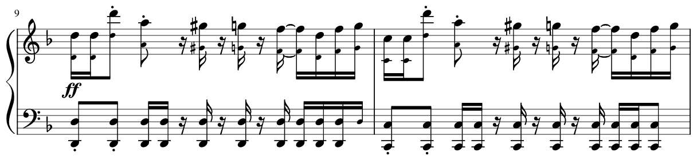
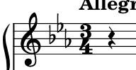

A música é algo presente no dia a dia de todos, seja como uma trilha sonora animada que embala momentos de alegria, ou como uma melodia serena que acalma a alma. Ela transcende fronteiras culturais, conecta pessoas e desperta emoções profundas.
Se você sempre quis compreender melhor conceitos fundamentais da música, como acordes e ritmo, você chegou ao lugar certo!
Aqui, serão explorados de forma simples esses e outros conceitos básicos da notação musical, com um foco especial nas partituras de piano.
Por mais que existam várias formas de categorizar os instrumentos musicais, eles geralmente são agrupados dependendo de como é produzido o som.
Instrumentos de Corda
Também conhecidos como cordofones, estes instrumentos têm como fonte primária de som a vibração de suas cordas.
Geralmente, para produzir o som desejado, esses instrumentos têm suas cordas:


Instrumentos de Sopro
Estes instrumentos, também conhecidos como aerofones, produzem som pela vibração do ar, sem que sejam usadas cordas ou membranas.


Instrumentos de Percussão
Podem variar bastante na forma com produzem som, podendo ser através de fricção, raspagem, agitação ou impacto, causado por baquetas ou mãos, podendo ter ou não uma membrana.


Eletrofones
São instrumentos musicais que utilizam correntes elétricas e eletromagnéticas. Essa classificação de instrumentos é a mais recente, tendo sido criada no início do século XX para categorizar o teremin.
Hoje, com o avanço da tecnologia, foi possível criar outros instrumentos que usam eletricidade, um dos mais famosos sendo a guitarra elétrica.
Instrumentos de Tecla
Assim como vários outros instrumentos, instrumentos de tecla não podem ser colocados em apenas uma das categorias anteriores, pois, por mais que apresentem características de instrumentos de percussão, pianos também podem ser classificados como instrumentos de corda, acordeões como madeiras e teclados como eletrofones.

Tons e semitons
Existem inúmeras frequências nas quais o ar pode vibrar, mas quando pensamos na notação musical ocidental, essas frequências são divididas em 12 semitons ou notas. Essa divisão é conhecida como escala cromática e é usada para representar a altura das notas.
Um dos jeitos mais fáceis de ilustrar isso seria em um piano, onde as 12 notas estão separadas em oitavas.
Usando este exemplo, existem 7 teclas brancas, sendo elas: dó, ré, mi, fá, sol, lá e si, e 5 teclas pretas, que possuem o mesmo nome, mas com símbolos de sustenido (#) e bemól (b) para indicar um semitom acima ou abaixo da nota original, respectivamente. Essas notas também são chamadas de acidentes.
As notas também podem receber outros nomes:
dó → C ; ré → D ; mi → E ; fá → F ; sol → G ; lá → A ; si → B


oitava
Obs: entre as notas si e dó e entre as notas mi e fá não há nenhum semitom e, por mais que na grande maioria elas sejam referidas pelos seus nomes normais, elas podem ser referidas como o sustenido ou o bemól de outra nota.
Intervalos das notas
O intervalo é nada mais nada menos do que a distância entre duas notas. Isso é muito usado para formar e explicar melhor acordes e escalas.
Ex: entre as notas mi e sol há o mesmo intervalo que entre sol # e si (3 semitons).

Partitura
A partitura é uma representação escrita da música, que utiliza símbolos musicais para descrever notas, ritmo e outros elementos. Ela é usada para que músicos possam interpretar e executar uma composição de forma precisa. A partitura contém pautas, onde as notas são posicionadas verticalmente, e pode incluir letras, acordes e outras informações relevantes.
Duração das notas
As notas podem ter uma infinidade de tempos de duração diferentes, mas geralmente, estas são as mais comumente usadas:


Claves
A clave é um símbolo que informa o músico a como ler a partiura, indicando a posição das notas.
Existem 4 claves comumente usadas:


Essa clave não é utilizada do mesmo jeito que as outras. Ela é utilizada para instrumentos de percussão que não possuem uma altura de notas determinada.

Armadura da Clave
Armadura ou armação da clave é um conjunto de símbolos no início da partitura que indica as alterações permanentes nas notas ao longo de uma música. Ela simplifica a escrita musical ao indicar antecipadamente quais notas devem ser tocadas como sustenidos ou bemóis, evitando a adição de acidentes em cada ocorrência da nota ao longo da partitura.

Um acorde é a combinação de duas ou mais notas tocadas simultaneamente, ele representa a harmonia e a sonoridade que sustentam a melodia. Além disso, desempenham um papel fundamental na harmonia de uma música, fornecendo uma progressão de sons que dá suporte à melodia e cria uma sensação de estabilidade e tensão.
Estrutura dos acordes
Alguns acordes mais utilizados são:

C / Cmaj / CM

Cm / Cmin

Caug / C+

Cdim / C°
Compasso é a divisão musical feita pelas barras presentes na partitura. Ele divide a música em pulsos, dando ênfase à algumas notas de maneira regular, determinando o ritmo da música.
A fórmula do compasso é determinada por dois números: o numerador, que indica quantos tempos terá dentro de cada compasso, e o denominador, que indica qual a duração da nota que ocupará todo o tempo do compasso.
Neste caso, 3 notas semimínimas ocupariam o compasso todo.
Além do que foi apresentado neste site, existem inúmeras outros assuntos relacionados à música e, por mais que alguns sejam muito ccomplexos para apresentar de forma introdutória, espero que o seu interesse tenha sido despertado para o mundo dessa arte tão bela!